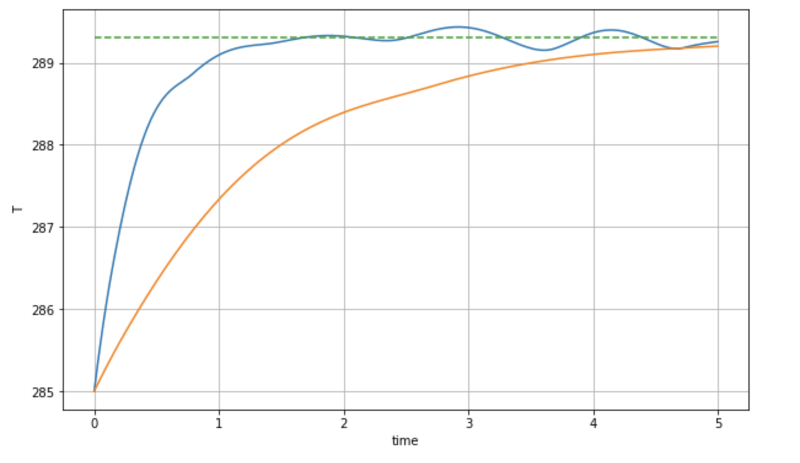
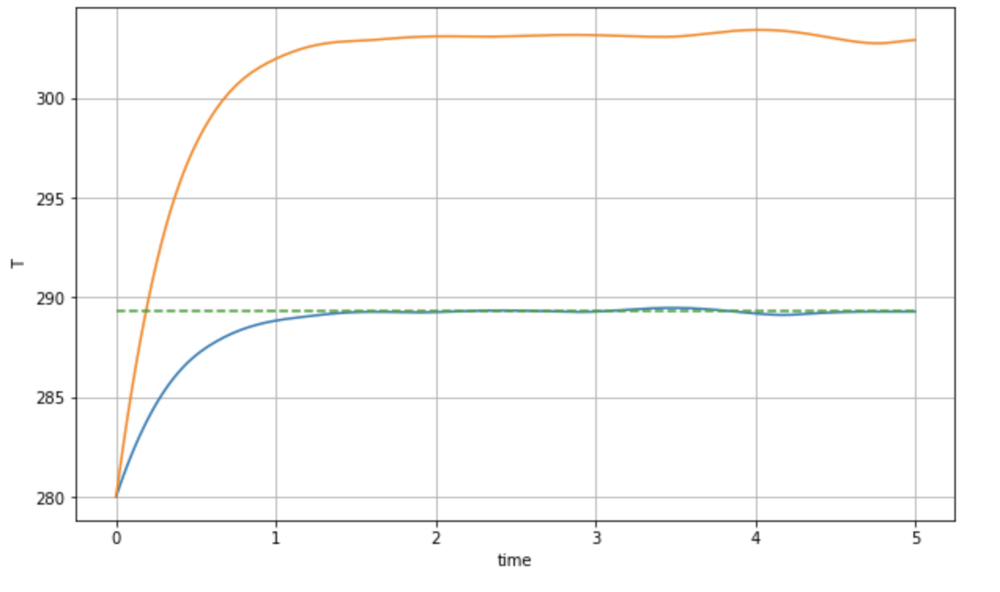

36 Problem set 4 solutions
Q1. The wine cellar problem I
Separation of variables leads to the equation \[ \frac{G'}{G} = \kappa \frac{H''}{H} = \lambda. \]
Crucially in considering possible solutions, we want solutions to obey the necessary boundary condition of \(T(0, t) = A\cos(\omega t) = G(t)H(0)\). This is highly restrictive.
We first consider \(\lambda = 0\). Then we have that \(G(t) = \text{const.}\). This is then no way to satisfy the time-varying boundary condition.
We next consider \(\lambda \in \mathbb{R}\). Then \(G(t) = C e^{\lambda t}\). So again the behaviour of the time-dependent part is incompatible with the oscillating boundary conditions.
Therefore the only remaining possibility is \(\lambda = i\alpha\) where \(\alpha\) is real. Then we have that \[ G(t) = C_1 e^{i\alpha t} + C_2 e^{-i\alpha t}. \] Written in terms of real-valued functions, this gives essentially a linear combination of \(\cos(\alpha t)\) and \(\sin(\alpha t)\). In order to be compatible with the boundary conditions, we would thus need \[ G(t) = \text{const.} \cos(\omega t) = \text{const.} \times \mathrm{Re} (e^{i\omega t}), \] i.e. taking the imaginary part (if we wish to continue manipulating exponentials).
Now solving for \(H(x)\), we set \(H(x) = e^{rx}\) as a solution ansatz, giving the characteristic equation \[ r^2 = i\omega \Longrightarrow r = \pm \sqrt{i \omega}. \] Therefore the general solution for \(H\) yields \[ H(x) = D_1 e^{\sqrt{i\omega}x} + D_2 e^{-\sqrt{i\omega}x}. \] In order to parse the above form, it is best to re-write the real and complex parts of the exponential argument separately. We note that by Euler’s theorem, \[ \sqrt{i} = (e^{\pi i/2})^{1/2} = e^{\pi i/4} = \frac{1 + i}{\sqrt{2}}. \] So now we can re-write \[ H(x) = D_1 e^{\sqrt{\omega/2} x} e^{i\sqrt{\omega/2\kappa}x} + D_2 e^{-\sqrt{\omega/2\kappa} x} e^{-i\sqrt{\omega/2}x}. \] By the boundedness assumption, we require that \(H(x)\) does not blow up as \(x \to \infty\). So therefore \(D_1 = 0\). We can finally put the results together, yielding: \[ T(x, t) = \text{const.} \times \mathrm{Re} \left[ e^{i\omega t} e^{-\sqrt{\omega/2\kappa} x} e^{-i\sqrt{\omega/2\kappa}x}\right] = \text{const.} \times \mathrm{Re} \left[ e^{-\sqrt{\omega/2\kappa} x} e^{i(-\sqrt{\omega/2\kappa}x + \omega t)}\right]. \] Note that the reason you have re-written it with the exponentials arranged in this fashion is because the portion of the exponential with the imaginary argument becomes oscillatory. Taking the real part yields \[ T(x, t) = A e^{-\sqrt{\omega/2} x} \cos\left(-\sqrt{\omega/2\kappa} x + \omega t\right). \] You can double check that the above solution satisfies all the required conditions, including the condition at \(x = 0\) (forcing us to choose the prefactor \(A\)).
Q2. The wine cellar problem II
Solution script can be found on the solutions/ folder of the Noteable Python website.
The numerical solution is tricky for two reasons. First, you must consider the right range of parameters. Second, the numerical algorithm suffers from instability, so you must consider the right spatial and time discretisation.
To begin, from the notes Chapter 12, you are given that typical parameters are \[ \omega = \frac{2\pi}{3.15 \times 10^7 \mathrm{s}}. \] This has already been converted to seconds, so instead use \[ \omega = 2\pi \, \mathrm{yrs}^{-1}. \] Indeed this value of \(\omega\) was chosen so that \(\cos(\omega t)\) has a wavelength of 1 years.
Next, it is given that \[ \kappa = 0.002 \mathrm{cm}^2/\mathrm{s}. \] We use the fact that \[ 1 \mathrm{yr} = 3.15 \times 10^7 \mathrm{s}, \qquad 1 \mathrm{cm} = 10^{-2} \mathrm{m}. \] So \[ \kappa = \frac{2 \cdot 10^{-3} \cdot 10^{-4} \mathrm{m}^2}{3.15 \times 10^{-7} \mathrm{yr}} = (2/3.15) \mathrm{m}^2 \mathrm{yr}^{-1} \approx 0.635 \mathrm{m}^2 \mathrm{yr}^{-1}. \] When distributing the typical mesh in the \(x\) direction, we want to make sure we go deep enough. We had found that putting the cellar in about 4m deep was enough, so as long as your code solve for a range of \(x\) values, say, between \(x = 0\) and \(x = 10\), this should be sufficient.
The script is given in the solutions folder.
Q3. EBMs and variable sun output
- Regarding the resultant variation on the Earth’s mean surface.
The variation seems to be very small. Ignoring units, we have \[ T = \left(\frac{1-a}{\sigma \gamma}\right)^{1/4} Q^{1/4} \approx 67.3505 \times Q^{1/4}. \] Substituting the values of \(Q\) given this gives a temperature that ranges from \(T = 289.499 \, \mathrm{K}\) to \(289.580 \, \mathrm{K}\). Converting this to Celsius gives \(16.35 \, {}^\circ \mathrm{C}\) to \(16.43 \, {}^\circ \mathrm{C}\) i.e. a fraction of a degree.
- Regarding the variation using the Budyko model.
We obtain the range of approximately \(T = 17.06 \, {}^\circ \mathrm{C}\) to \(17.19 \, {}^\circ \mathrm{C}\).
- Regarding why the disparity between actual surface measurements.
There are many ways to respond, but one major factor is the oceans, which are ignored in our model. The oceans provide a massive energy sink for the planet, and so we would expect that the minor variations of \(Q\) due to the 11-year cycle would be smoothed out by the effects of the oceans.
Q4. Phase line analysis
- Sketch the solution \(T(t)\) of this equation for \(t > 0\) if \(T(0) = 230, 240, 260, 270\) and \(300\).
You should be able to do this question by hand, but the following graph is generated via the accompanying Jupyter script in the solutions folder. The point is that once the steady-state solutions are known (dashed) then each solution given by the different initial condition can be approximated by whether it tends towards or away from the nearest fixed point.
- Sketch the solution \(T(t)\) of this equation for \(t > 0\) if \(T(0) = 285\). Then sketch the solution of this equation with the same initial data in the same coordinate system if \(C\) is twice as large. Explain your answer.
The below numerical solution shows blue for \(C = 1\) and orange for \(C = 4\). Notice that increasing \(C\) seems to decrease the rate of change of the evolution. Indeed, since \[ \frac{\mathrm{\partial}T}{\mathrm{\partial}t} \propto \frac{1}{C}, \] then multiplying \(C\) by factor is equivalent to slowing down the evolution by the inverse of that factor. A factor of \(C\) that is twice as large would slow down the evolution by half. Note that the oscillations shown in the graph below are numerical artifacts due to the tolerances on the ODE solver (how do you know this?)

- If \(\gamma\) is decreased due to the increased greenhouse effect, the entire curve is shifted upwards. Sketch the solution if \(T(0) = 280\). Sketch the solution with the same initial data if \(\gamma\) is decreased. Explain your answer.
Decreasing \(\gamma\) has the effect of shifting the curve upwards. The hottest steady state \(T_3\) is consequently increased. There are two main effects. First, the steady-state is much hotter, so the system will tend towards a much hotter state. Second, because decreasing $ $ will increase the rate of change of \(T\) (since we are subtracting less via the factor \(-\gamma T^4\)), then the evolution towards the hotter state is initially much faster.
You see that in the following diagram.

The above makes sense on a physical level. Decreasing \(\gamma\) is equivalent to increasing greenhouse gases. We do expect the system to tend to a hotter state, then.